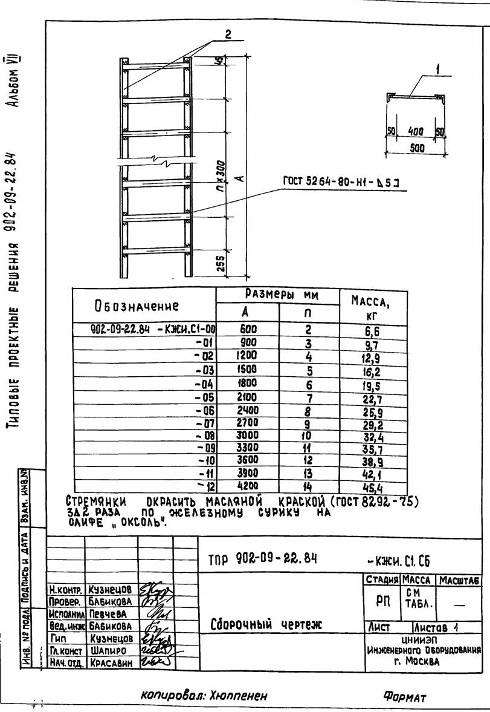
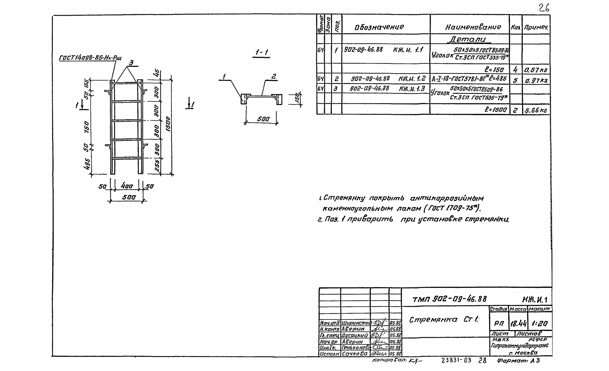
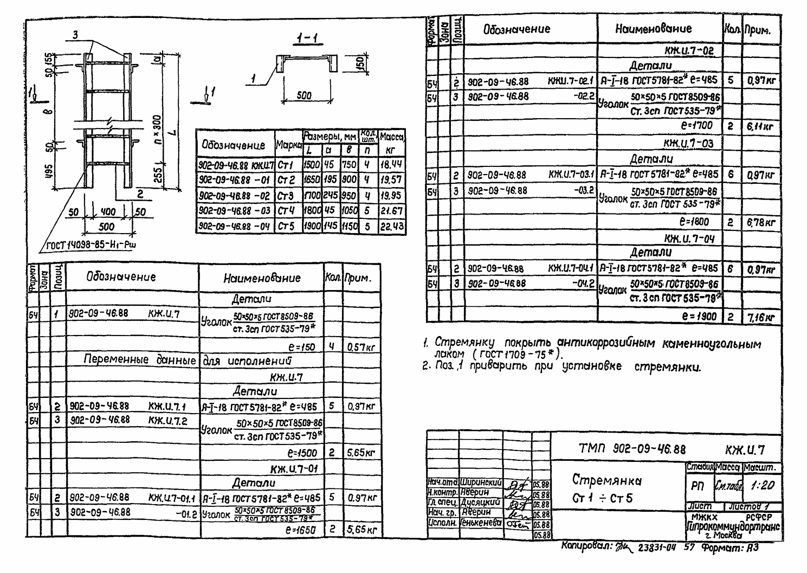
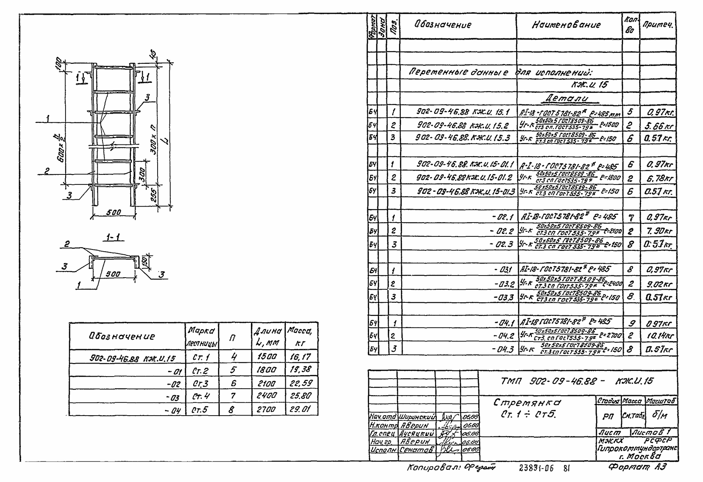

В этом разделе мы публикуем типовые проектные решения (ТПР) в виде альбомов строительных изделий, по которым производится наша продукция. Все документы доступны для скачивания.
Зачем это нужно: при закупке лестниц и стремянок для колодцев — особенно для государственных и муниципальных объектов — заказчику важно убедиться, что изделия соответствуют проектным решениям. Все альбомы, представленные здесь, — официальные источники, по которым мы изготавливаем продукцию.
Типовые проектные решения 901-09-11.84. Альбом V. Строительные изделия
Оглавление альбома
- 901-09-11.84 КЖИ.МН1 Скоба ходовая
- 901-09-11.84 КЖИ.С1СБ Стремянка. Сборочный чертеж
- 901-09-11.84 КЖИ.С1 Стремянка
- 901-09-11.84 КЖИ.П1 Плита днища
- 901-09-11.84 КЖИ.Са1 Сетка арматурная
- 901-09-11.84 КЖИ.П4 Плита днища
- 901-09-11.84 КЖИ.П4СБ Плита днища. Сборочный чертеж
- 901-09-11.84 КЖИ.Са7СБ Сетка арматурная. Сборочный чертеж
- 901-09-11.84 КЖИ.Са7 Сетка арматурная
- 901-09-11.84 КЖИ.П9 Плита днища
- 901-09-11.84 КЖИ.Са17 Сетка арматурная
- 901-09-11.84 КЖИ.П13 Плита днища
- 901-09-11.84 КЖИ.Са25 Сетка арматурная
- 901-09-11.84 КЖИ.П16 Плита днища
- 901-09-11.84 КЖИ.Са31 Сетка арматурная
- 901-09-11.84 КЖИ.П20 Плита перекрытия
- 901-09-11.84 КЖИ.П23 Плита перекрытия
- 901-09-11.84 КЖИ.П26 Плита перекрытия
- 901-09-11.84 КЖИ.П29 Плита перекрытия

Типовые проектные решения 902-09-22.84. Альбом VII. Строительные изделия
Оглавление альбома
- ТПР 902-09-22.84-КЖИ.ПД Плита дорожная ПД
- ТПР 902-09-22.84-КЖИ.ПД Са1 Сетка арматурная Са1
- ТПР 902-09-22.84-КЖИ.ПД Са2 Сетка арматурная Са2
- ТПР 902-09-22.84-КЖИ.КО Плита КО
- ТПР 902-09-22.84-КЖИ.П7 Плита П7
- ТПР 902-09-22.84-КЖИ.КО Са3 Сетка арматурная Са3
- ТПР 902-09-22.84-КЖИ.П7 Са4 Сетка арматурная Са4
- ТПР 902-09-22.84-КЖИ.П8 Плита П8
- ТПР 902-09-22.84-КЖИ.П3 Плита П3
- ТПР 902-09-22.84-КЖИ.П8 Са5 Сетка арматурная Са5
- ТПР 902-09-22.84-КЖИ.П3 Са6 Сетка арматурная Са6
- ТПР 902-09-22.84-КЖИ.С1 СБ Сборочный чертеж
- ТПР 902-09-22.84-КЖИ.ЗО Звено ограждения
- ТПР 902-09-22.84-КЖИ.С1 Стремянка С1
- ТПР 902-09-22.84-КЖИ.К1 Крышка металлическая К1
- ТПР 902-09-22.84-КЖИ.К2 Крышка деревянная К2
- ТПР 902-09-22.84-КЖИ.СР10 СБ Сборочный чертеж
- ТПР 902-09-22.84-КЖИ.СР10 Стенка-растекатель СР10
- ТПР 902-09-22.84-КЖИ.СР11 СБ Сборочный чертеж
- ТПР 902-09-22.84-КЖИ.СР11 Стенка-растекатель СР11
- ТПР 902-09-22.84-КЖИ.Са7 Сетка арматурная Са7
- ТПР 902-09-22.84-КЖИ.СР12 СБ Сборочный чертеж
- ТПР 902-09-22.84-КЖИ.СР12 Сетка-растекатель СР12
- ТПР 902-09-22.84-КЖИ.СР8 Сетка арматурная Са8
- ТПР 902-09-22.84-КЖИ.СР9 Сетка арматурная Са9
- ТПР 902-09-22.84-КЖИ.Са10 Сетка арматурная Са10
- ТПР 902-09-22.84-КЖИ.Са11 Сетка арматурная Са11
- ТПР 902-09-22.84-КЖИ.Са12 Сетка арматурная Са12
- ТПР 902-09-22.84-КЖИ.Са13 Сетка арматурная Са13
- ТПР 902-09-22.84-КЖИ.Са14 СБ Сборочный чертеж
- ТПР 902-09-22.84-КЖИ.Са15 Сетка арматурная Са15
- ТПР 902-09-22.84-КЖИ.Са14 Сетка арматурная Са14

Типовые материалы для проектирования 902-09-46.88. Альбом III. Колодцы круглые для труб dy=300-1200 мм
Оглавление альбома
- Колодцы линейные для труб dу = 300 - 600 мм. Таблицы 1, 2
- Колодцы линейные для труб dу = 800 - 1200 мм. Таблицы 3, 4
- Колодцы поворотные для труб dу = 300 - 600 мм. Таблицы 5, 6
- Колодцы поворотные для труб dу = 800 - 1000 мм. Таблицы 7, 8
- Колодцы поворотные. Углы поворота и рекомендуемые радиусы. Таблицы 9
- Колодцы узловые с одним присоединением для труб dу = 300 - 600 мм. Таблицы 10, 11
- Колодцы узловые с одним присоединением для труб dу = 800 - 1200 мм. Таблицы 12, 13
- Колодцы узловые с двумя присоединениями для труб dу = 800 - 1200 мм. Таблицы 15, 14
- Колодцы узловые с двумя присоединениями для труб dу = 800 - 1200 мм
- Колодцы узловые с двумя присоединениями для труб dу = 800 - 1200 мм. Таблицы 16, 17
- Дополнительные мероприятия. Таблица 18
- Конструкция горловины d = 700 мм. Таблица 19
- Конструкция горловины d = 1000 мм. Таблица 20
- Горловина d = 1000 мм. Таблица 20
- Привязка колодцев. Таблицы 21, 22. Пример расчета
- Узлы заделки труб, крепления стремянки и устройство лотка колодца
- КЖ.И.1 Стремянка Ст 1
- КЖ.И.2 Люк канализационный 1000х1000 мм. Эскизный чертеж общего вида

Типовые материалы для проектирования 902-09-46.88. Альбом IV. Колодцы прямоугольные для труб dy=300-1600 мм
Оглавление альбома
- Архитектурно-строительные решения
- Колодцы линейные для труб dу = 300 - 600 мм
- Колодцы линейные для труб dу = 300 - 600 мм. Таблица 1
- Колодцы линейные для труб dу = 800 - 1600 мм
- Колодцы линейные для труб dу = 800 - 1600 мм. Таблица 2
- Колодцы поворотные для труб dу = 300 - 600 мм. Углы поворота и рекомендуемые радиусы. Таблица 3
- Колодцы поворотные для труб dу = 300 - 600 мм. Таблица 4
- Колодцы поворотные для труб dу = 800 - 1000 мм. Узлы поворота и рекомендуемые радиусы. Таблица 5
- Колодцы поворотные для труб dу = 800 - 1000 мм. Таблица 6
- Колодцы узловые с одним присоединением для труб dу = 300 - 600 мм
- Колодцы узловые с одним присоединением для труб dу = 300 - 600 мм. Таблица 8
- Колодцы узловые с одним присоединением для труб dу = 800 - 1600 мм
- Колодцы узловые с одним присоединением для труб dу = 800 - 1600 мм. Таблица 8
- Колодцы узловые с двумя присоединениями для труб dу = 300 - 600 мм
- Колодцы узловые с двумя присоединениями для труб dу = 300 - 600 мм. Таблица 9
- Колодцы узловые с двумя присоединениями для труб dу = 800 - 1600 мм
- Колодцы узловые с двумя присоединениями для труб dу = 800 - 1600 мм. Таблица 9
- План перекрытия колодцев
- Дополнительные мероприятия
- Дополнительные мероприятия. Таблица 11
- Конструкция горловины d = 700 мм
- Горловина d = 700 мм. Таблица 12
- Конструкция горловины d = 1000 мм
- Горловина d = 1000 мм. Таблица 13
- Горловина d = 1000 мм. Таблица 14
- Горловина d = 1000 мм. Таблица 15
- Привязка колодцев. Таблица 16, 17. Пример расчета
- Узлы заделки труб, крепления стремянки и устройство лотка колодца
- Строительные изделия
- КЖ.И.1 Сетка С1 - С6
- КЖ.И.2 Плита перекрытия П02-1
- КЖ.И.3 Плита перекрытия П03-1
- КЖ.И.4 Плита перекрытия П04-1
- КЖ.И.5 Ведомость расхода стали на элемент
- КЖ.И.6 Сетка С7 - С9
- КЖ.И.7 Стремянка Ст1 - Ст5
- КЖ.И.8 Люк канализационный 1000х1000 мм. Эскизный чертеж общего вида
- Технические условия

Типовые материалы для проектирования 902-09-46.88. Альбом VI. Строительные изделия для армирования перепадных камер
Оглавление альбома
- КЖ.И.1СБ Сетка арматурная С1
- КЖ.И.1 Сетка арматурная С1
- КЖ.И.2СБ Сетка арматурная С2
- КЖ.И.2 Сетка арматурная С2
- КЖ.И.РС1 Ведомость расхода стали
- КЖ.И.3СБ Сетка арматурная С1
- КЖ.И.3СБ Ведомость стремянки
- КЖ.И.3 Сетка арматурная С1
- КЖ.И.4СБ Сетка арматурная С2
- КЖ.И.4 Сетка арматурная С2
- КЖ.И.5СБ Сетка арматурная С3
- КЖ.И.5 Сетка арматурная С3
- КЖ.И.РС2 Ведомость расхода стали
- КЖ.И.б Сетка арматурная С1
- КЖ.И.7СБ Сетка арматурная С4
- КЖ.И.7 Сетка арматурная С4
- КЖ.И.8СБ Сетка арматурная С2 и С3
- КЖ.И.8СБ Ведомость стремянки С2 и С3
- КЖ.И.8 Сетка арматурная С2 и С3
- КЖ.И.9 Сетка арматурная С5
- КЖ.И.10 Сетка арматурная С6
- КЖ.И.11СБ Сетка арматурная С7
- КЖ.И.11СБ Ведомость стремянки С7
- КЖ.И.11 Сетка арматурная С7
- КЖ.И.12СБ Сетка арматурная С8
- КЖ.И.12 Сетка арматурная С8
- КЖ.И.13СБ Сетка арматурная С9
- КЖ.И.13 Сетка арматурная С9
- КЖ.И.14СБ Сетка арматурная С10
- КЖ.И.14 Сетка арматурная С10
- КЖ.И.РС3 Ведомость расхода стали
- КЖ.И.15 Стремянка Ст1 - Ст5
- КЖ.И.16 Закладная деталь
- ТУ Технические условия

Оформление заказа и консультация
На данный момент в корзине 0 шт. товаров.
Для оформления заказа и детального просмотра выбранных товаров, перейдите в корзину или свяжитесь с нашим менеджером. Наши специалисты оперативно обработают ваш запрос, уточнят финальную стоимость (с учетом объема и доставки) и помогут завершить покупку.
+7 (965) 555-99-66